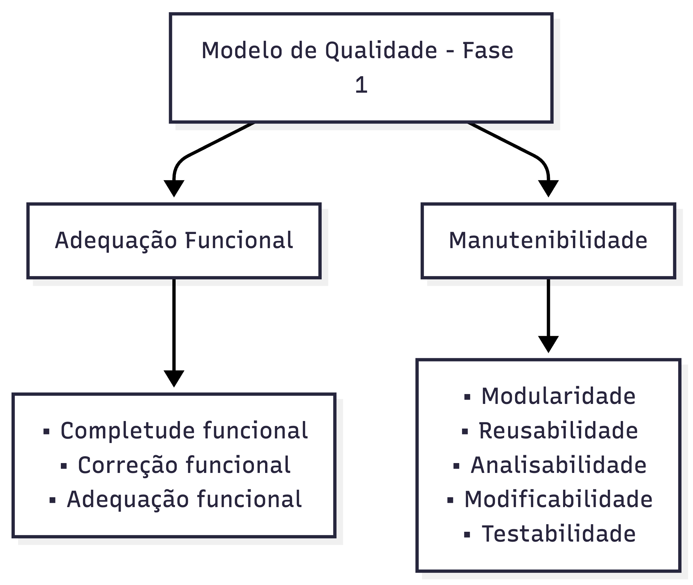

Modelo de Qualidade¶
1. Introdução¶
Objetivo: Representar o modelo de qualidade (ISO/IEC 25010 - SQuaRE) com foco nas duas características prioritárias Adequação Funcional e Manutenibilidade, definindo o escopo e a profundidade de análise para cada uma no contexto do NoFluxoUNB.
Contexto: O NoFluxoUNB é uma plataforma SaaS de planejamento acadêmico interativo que integra parsing de PDFs de matrizes curriculares, algoritmos de matching de disciplinas, visualização de fluxogramas e cálculos acadêmicos com suporte a IA. Estas características prioritárias foram selecionadas para validar a integridade funcional de operações críticas e garantir a manutenibilidade em um ambiente multi-linguagem (TypeScript, Python, SQL).
2. Diagrama (visão geral)¶

Figura 1 - Diagrama adaptado do modelo ISO/IEC 25010.
3. Escopo¶
A avaliação será limitada às duas características para esta Fase 1: Adequação Funcional e Manutenibilidade — em conformidade com a ISO/IEC 25010. As demais características do modelo (p.ex. Usabilidade, Segurança, Portabilidade, Compatibilidade) ficam fora do escopo deste trabalho.
4. Critérios de Priorização¶
A seleção e priorização das características foi realizada utilizando uma matriz de Impacto × Risco, considerando:
- Impacto: Consequência da falha na vida do usuário final (aluno, coordenador, sistema acadêmico)
- Risco: Probabilidade ou frequência de ocorrência de problemas
- Complexidade técnica: Relação com a arquitetura multi-linguagem (TS, Python, SQL)
- Alinhamento ao propósito: Conexão direta com o objetivo de planejamento acadêmico
5. Adaptação do Modelo¶
O modelo padrão ISO/IEC 25010 foi adaptado para priorizar as características mais relevantes ao propósito desta avaliação. A Tabela 1 apresenta a priorização das oito características do modelo de acordo com os critérios definidos anteriormente.
| Característica | Impacto | Risco | Complexidade | Prioridade | Justificativa |
|---|---|---|---|---|---|
| Adequação Funcional | Crítico | Alto | Alta | P1 | Núcleo do produto: parsing, matching e cálculos impactam decisões acadêmicas. Falhas têm consequências diretas para estudantes. |
| Confiabilidade | Crítico | Alto | Alta | P1 | Necessária para assegurar integridade dos dados e operação consistente (tolerância a falhas, recuperação). |
| Manutenibilidade | Alto | Médio-Alto | Alta | P1 | Sustentabilidade do projeto: facilidade de alterar regras acadêmicas e adicionar cursos sem regressões. |
| Eficiência de Desempenho | Alto | Médio | Média-Alta | P2 | Relevante para responsividade em geração de fluxogramas e processamento de grandes PDFs; afeta experiência e escalabilidade. |
| Segurança | Crítico | Médio-Alto | Alta | P2 | Proteção de dados pessoais e integridade — essencial, porém parte pode ser mitigada em fases posteriores. |
| Compatibilidade | Médio-Alto | Médio | Média | P3 | Importante ao integrar com diferentes fontes de dados e consumidores (export/import), porém menos crítico que funcionalidade básica. |
| Portabilidade | Médio | Baixo | Média | P3 | Facilita deploys em diferentes ambientes, mas não é requisito imediato para correção funcional. |
| Usabilidade | Alto | Baixo-Médio | Média | P3 | Influencia adoção e corretude de uso, mas não bloqueia operações essenciais quando ausente. |
Tabela 1 - "Matriz de priorização das características de qualidade (Impacto × Risco × Complexidade)" Autor: Matheus de Alcântara
Tabela de Ênfase por Priorização¶
A Tabela 2 apresenta a ênfase (escala de 1 a 5) atribuída a cada característica conforme o seu nível de prioridade.
| Característica | Prioridade | Ênfase (1 a 5) |
|---|---|---|
| Adequação Funcional | P1 | 5 |
| Confiabilidade | P1 | 5 |
| Manutenibilidade | P1 | 5 |
| Eficiência de Desempenho | P2 | 4 |
| Segurança | P2 | 4 |
| Compatibilidade | P3 | 3 |
| Portabilidade | P3 | 3 |
| Usabilidade | P3 | 4 |
Tabela 2 - "Ênfase atribuída a cada característica de qualidade por nível de prioridade" Autor: Matheus de Alcântara
6. Características Selecionadas¶
Foram selecionadas duas características de qualidade de software, descritas a seguir:
6.1 Adequação Funcional¶
Definição: Refere-se à capacidade do NoFluxoUNB de executar as operações acadêmicas principais (parsing de PDFs, matching de disciplinas, cálculos de equivalência, visualização de fluxograma) de forma completa, correta e adequada ao contexto de planejamento acadêmico, sem provocar erros, inconsistências ou perda de integridade dos dados. Subcaracterísticas:
-
Completude Funcional: O sistema executa completamente todas as operações acadêmicas necessárias. Falhas de completude comprometem a confiança do estudante e podem levar a decisões acadêmicas incorretas.
-
Correção Funcional: As operações produzem resultados precisos e confiáveis. Erros de correção podem resultar em rejeição de matrículas, aprovações falsas ou reprovações incorretas.
-
Adequação Funcional: As funcionalidades estão alinhadas com as regras e normas acadêmicas da UnB. Funções bem-sucedidas mas fora das normas comprometem a legalidade dos processos.
6.2 Manutenibilidade¶
Definição: Refere-se à capacidade do código-base do NoFluxoUNB ser compreendido, modificado, testado e estendido de forma eficiente, considerando a complexidade de múltiplas linguagens (TypeScript, Python, SQL) e a necessidade de adaptar o sistema para novas matrizes curriculares e regras acadêmicas. Subcaracterísticas:
-
Modularidade: O código está organizado em componentes independentes e bem-delimitados. Modularidade fraca facilita a propagação de bugs e dificulta testes isolados.
-
Reusabilidade: Funções, bibliotecas e componentes podem ser reutilizados em diferentes contextos sem duplicação. Reusabilidade baixa leva a código duplicado e aumento de esforço de manutenção.
-
Analisabilidade: O código é fácil de analisar, entender e diagnosticar problemas. Analisabilidade baixa aumenta o tempo de debug e o risco de regressão inadvertida.
-
Modifiabilidade: Alterações em regras de negócio, adição de novos cursos ou mudanças em PDFs requerem mínimo esforço e impacto. Modifiabilidade fraca causa regressões e impossibilita evolução do sistema.
-
Testabilidade: O código é estruturado para facilitar testes automatizados em todos os níveis. Testabilidade baixa impede detecção precoce de defeitos e aumenta risco de regressões em produção.
7. Relação entre as Características¶
As duas características escolhidas são complementares e formam o alicerce de qualidade do NoFluxoUNB:
- Adequação Funcional valida o "o quê": as operações acadêmicas são executadas corretamente.
- Manutenibilidade valida o "como": o código pode ser mantido, evoluído e confiado para suportar mudanças futuras.
7.1 Justificativa por Stakeholders¶
Estudantes: Dependem de Adequação Funcional para tomar decisões acadêmicas corretas (matrícula, trancamento, etc.). Caso o sistema falhe em parsing, matching ou cálculos, o estudante corre o risco de perder semestres ou não progredir no curso. Manutenibilidade garante que o sistema continuará confiável quando novas matrizes ou regras forem adicionadas (novos cursos, reforma curricular).
Coordenadores/Departamentos Acadêmicos: Confiam em Adequação Funcional para auditar integralizações, validar equivalências e garantir conformidade com normas da UnB. Manutenibilidade é essencial para adaptar o sistema rapidamente a mudanças regulatórias ou de política acadêmica sem comprometer a confiança em dados já processados.
Desenvolvedores/Equipe Técnica: Precisam de Adequação Funcional como base de validação (testes de aceitação). Manutenibilidade permite que novos desenvolvedores entendam o código, corrijam defeitos e implementem novas funcionalidades sem introduzir regressões, reduzindo tempo e custo de iterações.
Fontes de Dados da UnB (Insumos): O NoFluxoUNB consome dados oficiais da UnB — históricos escolares em PDF, ementas e matrizes curriculares — por meio de parsing. A Adequação Funcional depende diretamente da integridade desses insumos: mudanças no formato dos PDFs ou nas ementas impactam a Correção Funcional do sistema. A Manutenibilidade garante que o NoFluxoUNB possa ser rapidamente adaptado quando essas fontes externas mudarem, sem introduzir regressões. Vale ressaltar que o sistema oficial da universidade não depende nem consome dados do NoFluxoUNB, que é um projeto acadêmico/de extensão dos estudantes.
Juntas, elas fornecem confiança de que o NoFluxoUNB não apenas funciona corretamente hoje, mas permanecerá confiável, adaptável e sustentável conforme novas matrizes e regras acadêmicas forem integradas ao longo do ciclo de vida do projeto.
8. Referências Bibliográficas¶
ISO/IEC 25010:2023. Características e subcaracterísticas de qualidade de software. Disponível em: https://www.iso.org/standard/82998.html. Acesso em: 2026.
SILVA, E.; TAVARES, T. Avaliação de Qualidade de Software com ISO/IEC 25010. Métodos e Boas Práticas, 2024.
UNB-MDS. 2025-1-NoFluxoUNB. [S. l.], 2025. Disponível em: https://github.com/unb-mds/2025-1-NoFluxoUNB. Acesso em: 12/05/2026.
Histórico de Versão¶
O histórico de alterações desta página é apresentado na Tabela 3.
| Versão | Data | Descrição | Autor(es) | Revisor(es) | Data de Revisão | Alterações Realizadas |
|---|---|---|---|---|---|---|
| 1.0 | 12/05/2026 | Criação da estrutura do Modelo de Qualidade com Adequação Funcional e Manutenibilidade | Matheus de Alcântara | |||
| 1.1 | 13/05/2026 | Revisão e ajustes na definição das características e subcaracterísticas | Matheus de Alcântara | |||
| 1.2 | 05/06/2026 | Correções do Ponto de Controle 1: reordenação da tabela de priorização por nível (P1→P3) e correção da lógica de integração com as fontes de dados da UnB | Matheus de Alcântara |
Tabela 3 - "Histórico de versões" Autor: Matheus de Alcântara